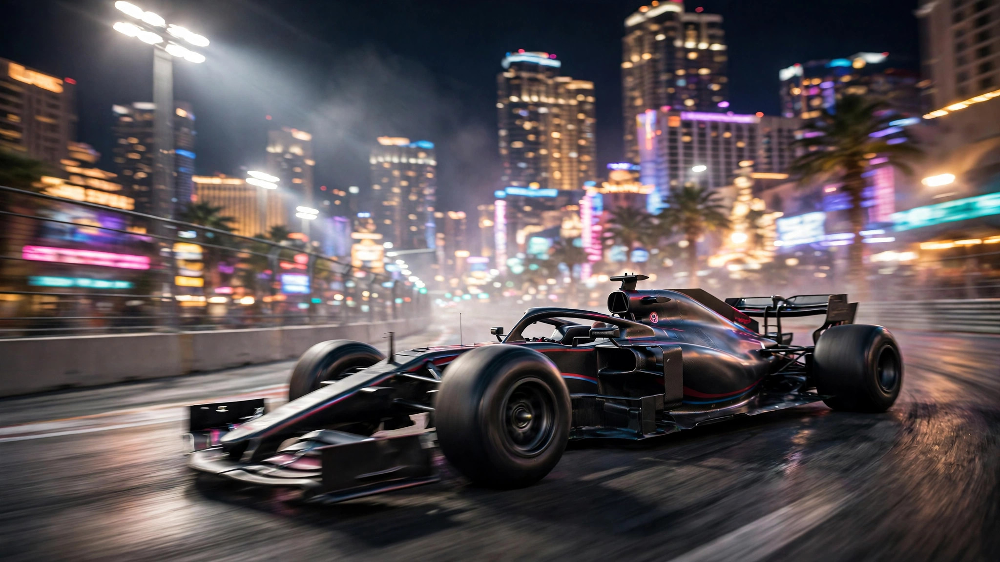

Las Vegas Grand Prix Result 2026: Verstappen Wins, Norris 2nd, Piastri 3rd (Checked 23 November)

Max Verstappen won the 2026 Las Vegas Grand Prix, holding off a race-long challenge from Mercedes to beat the McLarens of Lando Norris and Oscar Piastri in a 50-lap race that featured 35 lead changes. Verstappen crossed the line 0.639 seconds ahead of Norris, with Piastri 1.529 seconds back.
It was Verstappen's third Las Vegas win, his fourth victory of the season and the 75th win of his career. He started from pole, lost and retook the lead again and again through the night, and was still ahead when it mattered at the flag.
Full Result — Top 10
- 1. VERSTAPPENRed Bull — 1:27:39.624 — 25 ptsWINNER
- 2. NORRISMcLaren — +0.639s — 18 pts
- 3. PIASTRIMcLaren — +1.529s — 15 pts
- 4. ANTONELLIMercedes — +2.574s — 12 pts
- 5. GASLYAlpine — +2.927s — 10 pts
- 6. COLAPINTOAlpine — +7.955s — 8 pts
- 7. HAMILTONFerrari — +12.795s — 6 pts
- 8. SAINZWilliams — +12.938s — 4 pts
- 9. RUSSELLMercedes — +13.192s — 2 pts
- 10. LECLERCFerrari — +17.554s — 1 pt
The top five were covered by under three seconds at the flag. Behind the points, Nico Hülkenberg and Gabriel Bortoleto finished 11th and 12th for Audi, Fernando Alonso retired with a lap remaining, Arvid Lindblad and Sergio Pérez did not finish, and Alex Albon did not start.
How the Race Was Won
Verstappen started from pole with George Russell's Mercedes alongside him, but the lead changed hands 35 times over the 50 laps as the Mercedes pair, the McLarens and Verstappen traded the front under the floodlights. Kimi Antonelli moved into the final podium place by lap 37, and Russell was ahead of Verstappen again late on — until the Dutchman retook the lead and never gave it back.
The decisive moment came late: Russell locked up and clipped the barrier, dropping to ninth, while Antonelli lost pace in the closing laps. That handed McLaren a double podium they had looked unlikely to get a few hours earlier. Piastri's drive was the comeback of the night — he started 17th on the grid and still finished third, his first podium since the Miami Grand Prix in May.
Ferrari's Bad Night
It was a disastrous evening for Ferrari. Lewis Hamilton and Charles Leclerc collided with each other during the race, and both drivers collected 10-second penalties for separate incidents. Hamilton still finished seventh, just ahead of Carlos Sainz — who was contesting his 250th Grand Prix for Williams — while Leclerc ended up tenth after his penalty. Sainz's eighth place was his first points finish since Azerbaijan.
What It Means for the Championship
With two rounds left, the drivers' standings (calculated after Las Vegas, pending the official championship update) put champion Antonelli on 402 points and Verstappen on 304. Hamilton moved up to third on 267, ahead of Russell and Norris, both on 264. In the constructors' standings, Mercedes lead on 666 points, ahead of Ferrari on 517, Red Bull on 440 and McLaren on 431.
Quick Answers
Who won the Las Vegas Grand Prix 2026?
Max Verstappen (Red Bull), in 1:27:39.624 over 50 laps. It was his third Las Vegas win and the 75th win of his career.
Who finished on the podium?
Lando Norris second (+0.639s) and Oscar Piastri third (+1.529s) — a McLaren double podium. Kimi Antonelli was fourth.
How many lead changes were there?
35 lead changes over 50 laps, according to Formula 1's race report — Verstappen called it unlike anything he had experienced in Formula 1.
What happened to George Russell?
Russell challenged for the lead all race, but locked up late on, clipped the barrier and dropped to ninth — which cost him ground in the fight for second in the championship.
When is the next race?
Two rounds remain after Las Vegas. This page will be updated when the next result is in.